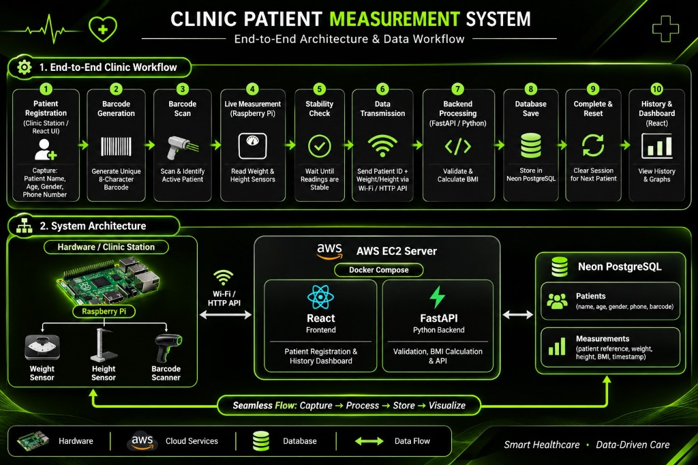

An exhaustive line-by-line audit of both source repositories left by the previous senior developer was conducted:
https://github.com/Giridhar257/Weighing_fronthttps://github.com/Giridhar257/Weighing_automationWeighing_automation is in reality a FastAPI backend with a 30-line standard input (sys.stdin) scanner reader script. There is zero GPIO code, zero load cell/HX711 integration, zero ultrasonic height code, no stability filter, and no systemd daemon. The physical measurement layer on the Raspberry Pi—which is the heart of the clinic station—must be engineered completely from the ground up.
database.py.10.65.139.44.The system is designed for an automated clinic station interacting seamlessly with cloud infrastructure:

Weighing_front)Stack: React 19.2.5, React Scripts 5.0.1, Chart.js 4.5.1, React-Chartjs-2 5.3.1, Axios 1.15.2.
| Component / File | Status | Observed Behavior & Code Findings |
|---|---|---|
src/App.js (Registration) |
Partial | Collects Name, Age, Gender, Phone. Submits to POST /register. Lacks phone format validation, empty check guards, and loading feedback. |
src/App.js (Barcode Card) |
Partial | Renders barcode string and an <img> pointing to http://10.65.139.44:8000/barcodes/.... Fails when IP changes. No printable sticker layout. |
src/App.js (Live Polling) |
Defective | Runs a setInterval every 300ms to GET /live-weight. Lacks WebSocket or debounce; causes high memory churn and unneeded server load. |
src/App.js (Chart & History) |
Partial | Renders a Line chart of historical weights. Hardcoded filter: Drops any weight below 20 kg (w.weight > 20), breaking pediatric usability. Height and BMI are completely absent. |
src/App.js (Environment Config) |
Hardcoded | Line 43: const API = "https://weighingautomation-production.up.railway.app";. No .env file or process.env.REACT_APP_API_BASE_URL used. |
Weighing_automation)Stack: Python 3.12, FastAPI 0.110.0, SQLAlchemy 2.0.49, psycopg2-binary 2.9.12, python-barcode 0.16.1, Pillow 11.3.0, Pydantic 2.6.4.
| File | Status | Observed Functionality & Vulnerabilities |
|---|---|---|
database.py |
Leak | Contains plaintext Neon PostgreSQL password: npg_vkGDa7Uj0uIN and commented local password Qwert585. No environment variable fallback. |
models.py |
Partial | Defines Patient and Weight. Missing height column, BMI column, and proper timestamps. Spec requires measurements table. |
main.py |
Partial | FastAPI routes for /register, /scan, /patient/{barcode}, /weight, /live-weight. Has global in-memory state variables which are non-thread-safe and fail in multi-worker deployments. |
barcode_generator.py |
Partial | Generates Code128 barcodes using uuid.uuid4()[:8]. Does not verify whether the 8-character string collides with an existing patient barcode in database. |
scanner_to_api.py |
Crude | 32-line loop reading sys.stdin and posting to Railway URL. No reconnection logic, no buffering, no session handling, and no hardware detection. |
patients.db |
Pollution | A 24KB SQLite test database checked directly into git repository history. |
openmrs_service.py |
Empty | Completely empty 0-byte file abandoned by the senior. |
| Specification Area | Found in Senior's Code | Required Engineering Specification |
|---|---|---|
| Pi Hardware Model | None specified (Code ran on laptop/cloud). | Raspberry Pi 4 Model B (2GB/4GB) or Pi 3B+. |
| Operating System | None. Railway Linux container in runtime.txt. | Raspberry Pi OS (64-bit Lite, Debian Bookworm). |
| GPIO / Sensor Drivers | 0 lines of code. No GPIO libraries imported. | RPi.GPIO / gpiozero, hx711, pyserial. |
| Weight Sensor | None (comment mentions NO barcode from ESP). |
HX711 24-bit ADC + 4-cell Wheatstone Bridge Load Cells. |
| Height Sensor | Zero mention in entire codebase. | HC-SR04 Ultrasonic (or VL53L0X Time-of-Flight Laser Sensor). |
| Barcode Scanner | Commented USB HID VID:PID (1504:4608) / sys.stdin. |
USB HID Keyboard emulation with evdev/stdin stream. |
| Stability Verification | None on device (crude simulated boolean in backend). | Rolling window filter: N consecutive values within tolerance. |
| Network Fault Tolerance | 1-shot synchronous request with 5s timeout. | SQLite offline buffer queue (buffer.db) with background sync. |
| Boot & Process Control | Manual command line run. | Linux Systemd unit (clinic-station.service) with auto-restart. |
| Development Mocking | None. | Dual Mode: MOCK_MODE=true flag for laptop testing. |
| Step | Workflow Requirement | Audit Status | Gap Analysis & Remediation Needed |
|---|---|---|---|
| 1 | Patient Registration (React UI) | Partial (50%) | Form exists. Needs form validation, clear user feedback, and responsive layout. |
| 2 | Barcode Generation | Partial (60%) | Code128 generation works. Needs DB collision check and printable CSS card in UI. |
| 3 | Barcode Scan (on Pi) | Missing (10%) | Only raw stdin script exists. Needs modular scanner driver with session binding. |
| 4 | Live Measurement (on Pi) | Missing (0%) | Zero sensor drivers exist. Must write HX711 and HC-SR04 drivers + mock generators. |
| 5 | Stability Check (on Pi) | Missing (0%) | Must implement on the Pi: buffers N readings within tolerance before transmitting. |
| 6 | Data Transmission & Offline Buffer | Missing (5%) | Must implement local SQLite queue (buffer.db) with backoff retry worker. |
| 7 | Backend Processing (FastAPI) | Partial (50%) | FastAPI routes exist. Must add height, calculate BMI, add validation, and API key auth. |
| 8 | Database (Neon PostgreSQL) | Partial (40%) | Connected to Neon. Must update schema to measurements (with BMI) and use .env. |
| 9 | Complete & Reset (State Machine) | Missing (0%) | Must build state machine: IDLE -> SCANNED -> MEASURING -> STABLE -> SENT -> RESET. |
| 10 | History & Dashboard (React) | Partial (30%) | Weight chart exists. Must add Height, BMI tracking, BMI classification, and table view. |